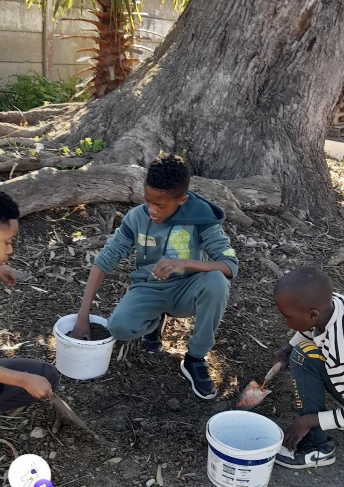
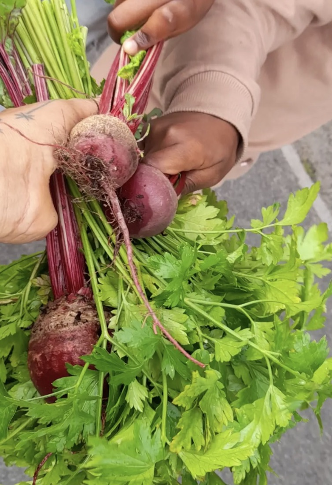
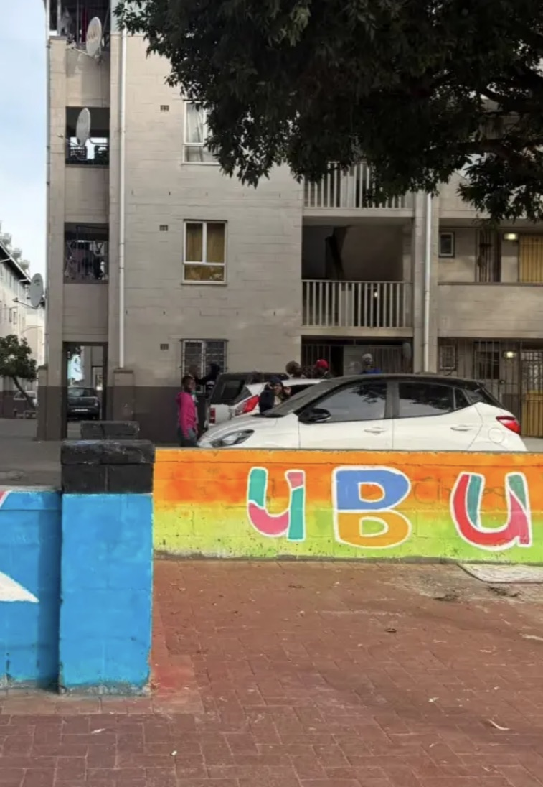

Ceramics & clay
Shape, sculpt and experiment with clay; visiting experts can share specific techniques and skills.
Activities
Children learn by doing: exploring materials, practising new skills, making stories and working through ideas together.
Explore through making
Shape, sculpt and experiment with clay; visiting experts can share specific techniques and skills.
Plant, tend, harvest and learn about soil, food and how living things grow.
Use color and mark-making to share ideas, feelings and observations.
Create characters, tell stories, move, speak and listen together.
With tools and materials available, children can choose a direction, test ideas and solve problems together.
Visits and trips help children meet new places, people, materials and ways of working.
A glimpse of the work
From a shared garden project to the clay table, children practise patience, teamwork and curiosity as they make.







Make space for more discovery
Support children’s creativity with time, resources or financial support.
Support the programme